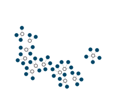
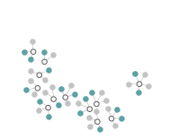
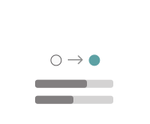

Context
Structural change and workforce disruption
Decarbonization, trade shifts, and technological change are transforming Canadian industries.
Most workers will adapt, but a small but concentrated share in susceptible sectors
may need support to move into a new career pathway.
Why communities
Disruption compounds in susceptible communities
Where disruption is concentrated, the effects can be sudden and far-reaching —
local supply chains, services, housing. These communities
have the most at stake, and the most to gain from proactive transition planning.
The opportunity
Skills data enables actionable pathways
Combining national skills data with local knowledge, conditions, and participation can help
governments design targeted supports,
municipalities plan workforce strategies,
and training providers develop programs matched to real transition needs.
Where structural change is concentrated in a dominant local industry, a
skills-based approach can identify viable career transitions and
the training investments to support them — in four steps.
1
Identify
Susceptible communities and occupations reliant on sectors facing disruption

→
2
Match skills
Match occupations via competency profiles using OaSIS (166 competencies across 4 domains)

→
3
Filter for viability
Narrow to locally viable alternatives using earnings, outlook, training fit, and community input

→
4
Skill gaps
Pinpoint specific competencies where targeted training would have the most impact per pathway
